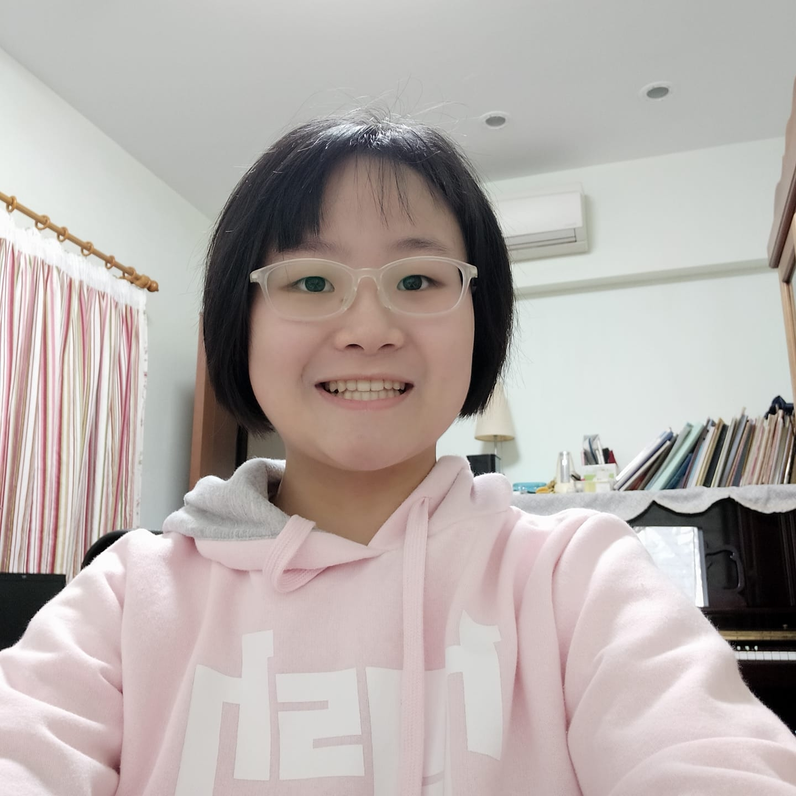
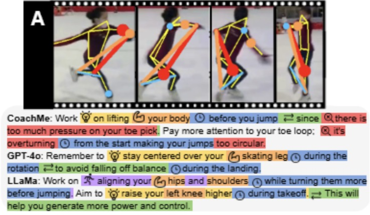
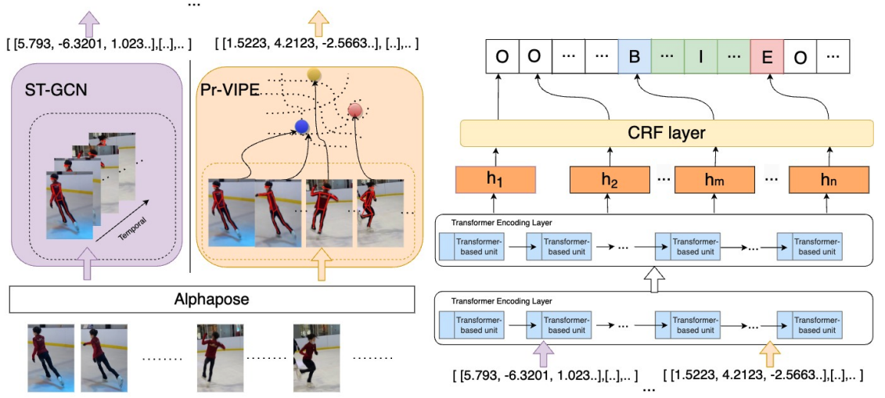
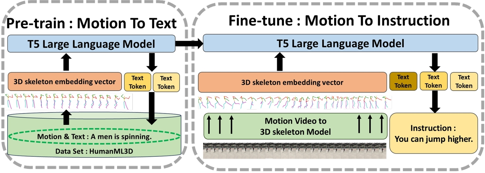
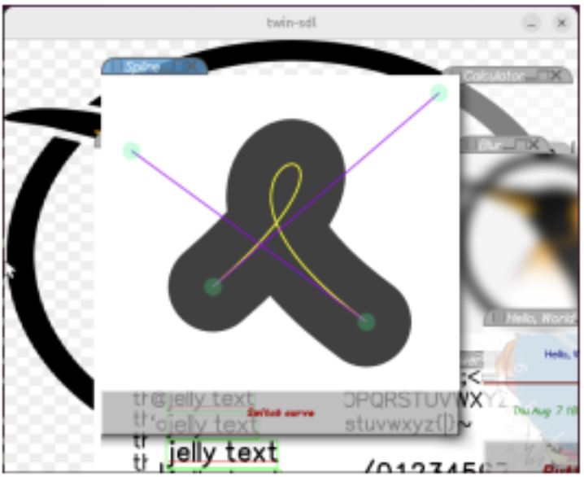
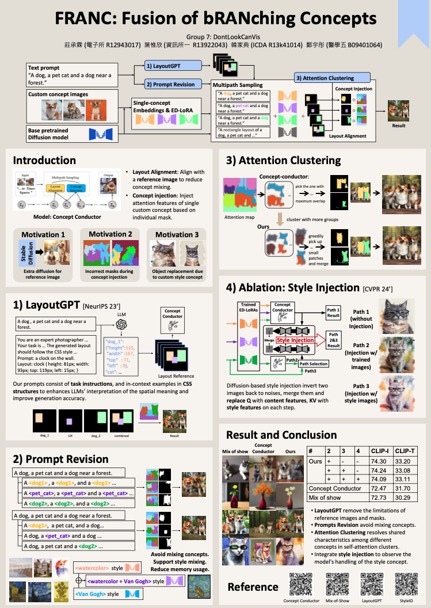
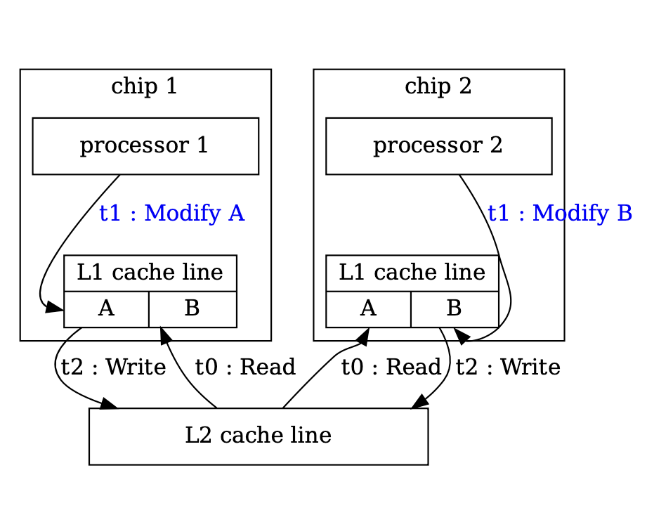
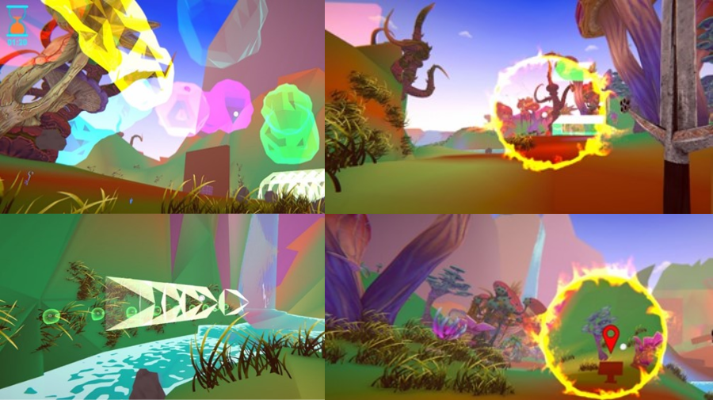
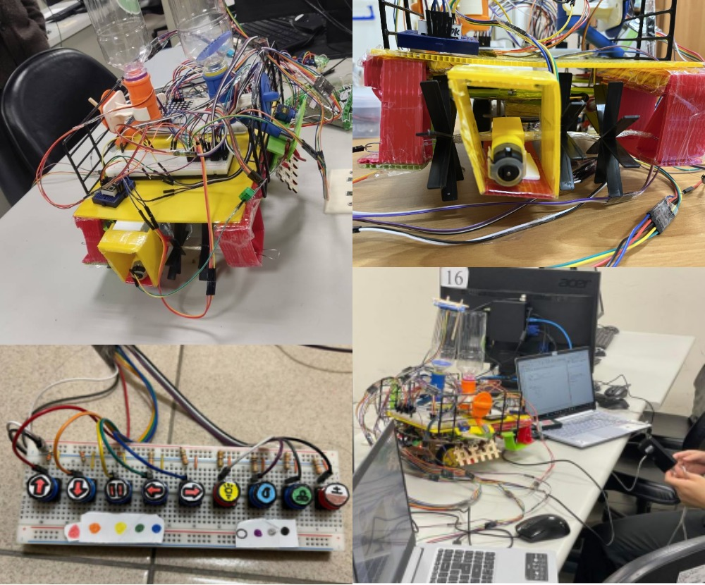
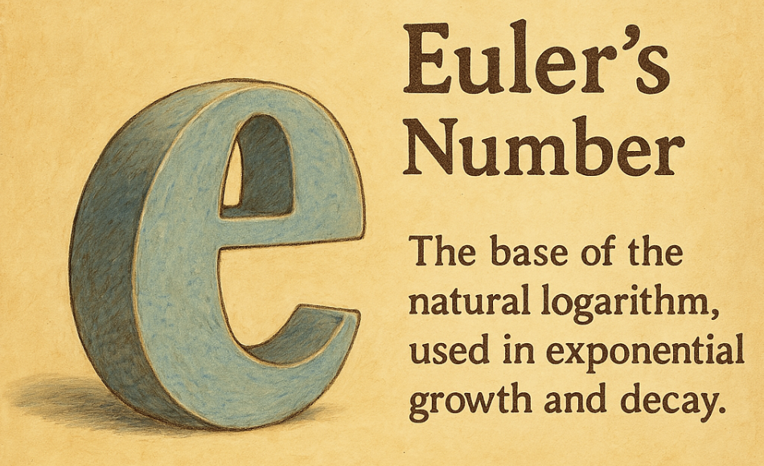

Wei-Hsin Yeh 葉惟欣
Master's Student @ NTU CSIE
Research Assistant @ NTU CML
Email: weihsinyeh@cmlab.csie.ntu.edu.tw
Scholar / LinkedIn / GitHub / NCKU wiki / Hobby / Cool graphics researchers

About Me
I'm a master's student in Computer Science and Information Engineering at National Taiwan University (NTU). My research interests lie at the intersection of computer graphics and natural language processing.
Currently, I work with Prof. Bing-Yu Chen at the Communication and Multimedia Lab, researching SVG and text-to-image generation.
Previously, I worked as a research assistant for two years at the Natural Language Processing and Sentiment Analysis Lab in the Institute of Information Science, Academia Sinica, advised by Prof. Lun-Wei Ku. I received my B.S. degree in Computer Science and Information Engineering from National Cheng Kung University (NCKU) in 2024, graduating first in my class.

Honors and Awards
- Foxconn Tech Award, 2026
- AAAI Educational AI Videos, 2025
- Academic Achievement Award, 2024
- Academic Achievement Award, 2023
- Graduation Project Exhibition, rank first, 2023
Publications

Wei-Hsin Yeh, Yu-An Su, Chih-Ning Chen, Yi-Hsueh Lin, Calvin Ku, Wen-Hsin Chiu, Min-Chun Hu, Lun-Wei Ku
Proceedings of ACL 2025
A generative instruction model based on motion analysis for sports.

Wei-Yi Chen, Yi-Ling Lin, Yu-An Su, Wei-Hsin Yeh, Lun-Wei Ku
PREPRINT 2024
A figure skating dataset and Transformer-based motion analysis model for fine-grained jump airtime detection, enabling more precise evaluation of athletic performance and cross-sport adaptation.

Wei-Hsin Yeh, Pei Hsin Lin, Yu-An Su, Wen Hsiang Cheng, Lun-Wei Ku
MMAsia '23 Workshops
A motion-analysis and instruction-generation framework that uses 3D skeletal representations and a pretrained T5 model to generate personalized sports coaching instructions from action videos.
Projects

A window system for resource-constrained devices.
Development Log
A concept-fusion method that integrates layout masks, prompt masking, and attention clustering to enable spatially guided multi-concept generation, with support for visual style injection.

E-book discussing how concurrent threads collaborate using concurrency tools and how to write concurrent code.
Development Log
Unity game project integrated with VR, which has 4 technical features: camera projection clipping for space transition, shader programming for time transition, real-time path planning for grasping/releasing objects, and triangulation application for killing enemies.

Agricultural machinery vehicle project implemented with microprocessor. The vehicle can move, water, plant, dig, and display the location of the vehicle.
Notes

The origins of e, exploring how mathematicians defined it, discovered its remarkable properties, and why it is known as the base of the natural logarithm.
Talks
- A Lightweight Modern Window System Independent of FPU, 2D Accelerators, and GPUs, COSCUP 2025
- CoachMe: Decoding Sport Elements with a Reference-Based Coaching Instruction Generation Model, AICoE 2025